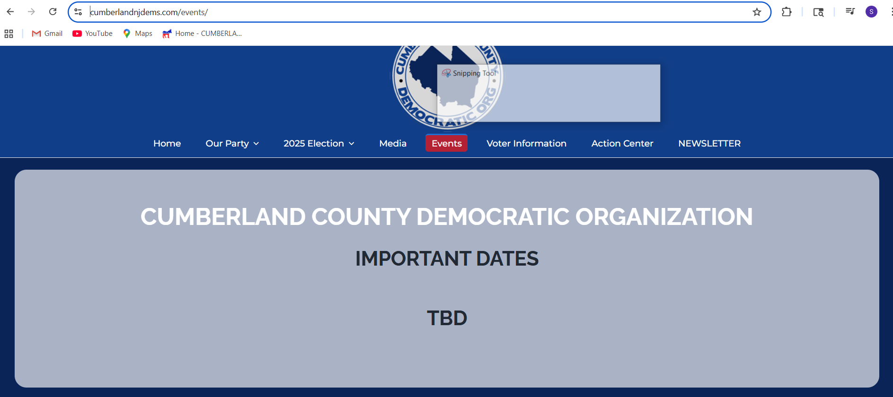

Suggested Use of Candidate Pages & Project Disclaimer
Note: There are a few ways to use this page. It mixes objective source material with light analysis and first-hand reporting so voters can choose their depth.
How to get the most out of this candidate page
- Start with the Quick Summary. Click the Quick Summary button underneath the websites section. It gives you the fast take: what we know from sources + brief analysis from a “data collector / local reporter” point of view.
- Scan the objective sources. If you want more data, jump into the source material we’ve collected:
- Official campaign website (if available)
- Social media pages and posts (if available)
- Interviews (video/audio) and transcripts (if available)
- Check the agenda & positions. Look for the candidate’s stated agenda and issue stances. We try to group them plainly so you can compare across candidates quickly.
- Read the Transparency/Accessibility rating. For a deeper look at how transparent the candidate has been (web presence, interviews, follow-ups, meet n greets) and how communicative they've been in response to outreach, see the rating and its short explanation. This helps you understand what’s easy to find and who is easy to contact.
- Use the page as a multi-layered hub. If you 'just want the facts', stick to the source documents. If you want opinions about transparency, accessibility, and communication, check the transparency meter. If you want coverage somewhere in between, like interviews that range from introductory to moderately pressing, watch the interviews. Choose your own adventure.
Where we add context or opinion, it’s to help busy voters make sense of gaps in local information. Not everyone has time to be a volunteer politico.
Yolanda G. Balicki


Events
As of September 11, 2025, InformTheVoteNJ searched the official Cumberland County Democrats website, the joint Capizola/Garcia-Balicki Facebook page, and other public listings (Mobilize, local news, etc.). No publicly advertised campaign events for either candidate were found.
This screenshot shows the “Events” page on the Cumberland County Democrats website at the time of review, which displayed no upcoming events:
